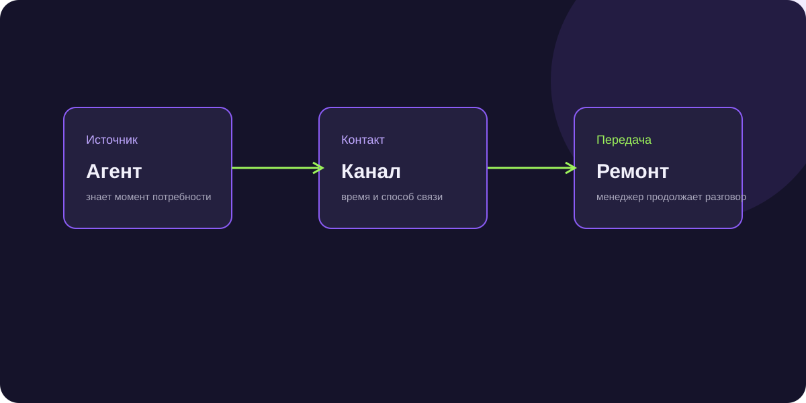
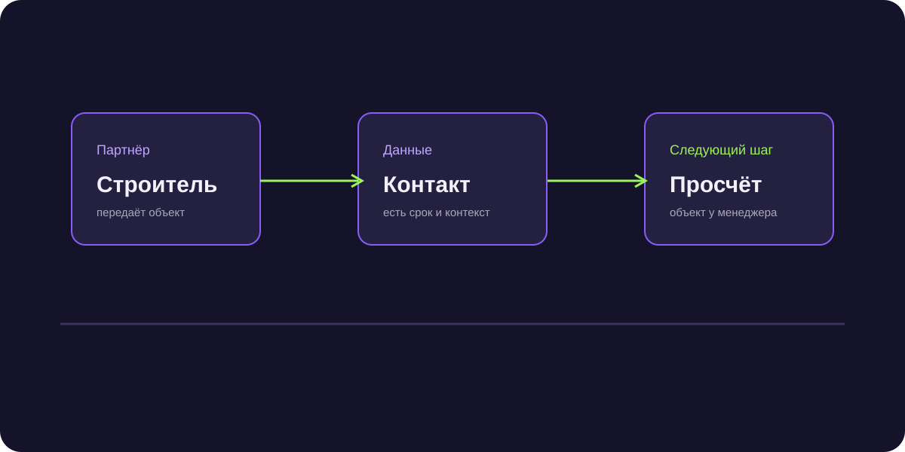
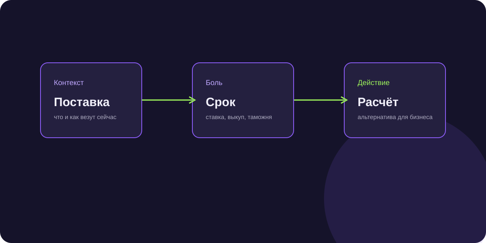

Как строить продажи, когда первый контакт уже не ручной
Разборы реальных задач: поиск B2B-клиентов, Telegram-аутрич, квалификация, follow-up и ИИ-агенты. Без обещаний универсальных конверсий.
Кейсы по нишам
Реальные проекты NextGen: бизнес-задача, ход диалога, цифры и следующий шаг.

Возврат денег с маркетплейсов
Как продавца доводили от данных кабинета до эксперта.

Клиенты на ремонт квартир
130 ₽ за лид через агентов недвижимости.

Лиды для окон
135 лидов и 36 объектов на просчёт.

Заказы для швейного производства
100+ заявок за 14 дней и CPL 378 ₽.

Лидогенерация для агентства
980 заявок и квалификация до диагностики.

Лиды для карго
121 лид через разговор о текущей поставке.

Клиенты для мебели
97 партнёров готовы дать проект на расчёт.

Рассрочка для онлайн-школы
364 квалифицированных B2B-лида.

Лиды для стоматологий
58 лидов через разговор об экономике клиники.

Клиенты для бухгалтерских услуг
77 лидов через диагностику бизнес-боли.
Разборы механики
Практические статьи о Telegram-аутриче, ИИ-продавцах, квалификации и работе с B2B-воронкой.
B2B-продажи и рассылки
70 практических материалов по продажам, лидам и каналам.

Рассылка в Telegram для бизнеса
Сценарии, риски и выбор формата коммуникации.

Чат-бот или ИИ-продавец
Как выбрать инструмент под конкретный этап воронки.

ИИ-продавец в B2B
Что делегировать агенту, а что оставить менеджеру.

ИИ-агенты для бизнеса
С каких задач продаж имеет смысл начинать внедрение.

Автоматизация продаж
Что автоматизировать до покупки новой CRM.

Лидогенерация для B2B
Как оценивать не число контактов, а качество следующего шага.

Поиск клиентов для B2B
Сегмент, оффер и канал первого контакта.

Привлечение клиентов в B2B
Как превратить набор каналов в управляемую систему.

Холодные продажи в B2B
Как строить исходящий диалог без массового спама.

Клиент не отвечает
Как возвращать диалог и когда перестать писать.
Новые гайды по ИИ, аутричу и B2B-продажам
Практические алгоритмы, промпты, регламенты и скрипты для роста конверсии первого контакта.
ИИ-скрипты продаж: как нейросеть ведет живой диалог без жестких шаблонов
ИИ-скрипты продаж: как генеративные нейросети заменяют жесткие сценарии менеджеров, удерживают контекст и доводят клиента до встречи.
Промпты для менеджеров по продажам: 15 практических шаблонов для B2B
Готовые промпты для менеджеров по продажам: шаблоны для анализа ЛПР, подготовки КП, отработки возражений и составления цепочек follow-up.

Скоринг лидов с помощью ИИ: как находить платежеспособных клиентов в потоке заявок
Скоринг лидов с помощью ИИ: автоматическая оценка платежеспособности, соответствия ICP и вероятности сделки на основе диалога и открытых данных.
ИИ-продавец для WhatsApp: как автоматизировать продажи в главном мессенджере
ИИ-продавец для WhatsApp: как подключить умного нейросетевого ассистента к официальному WhatsApp Business API, квалифицировать клиентов и вести диалог.
Автопилот в переписке: как настроить ответы клиентам без потери конверсии
Автопилот в деловой переписке: как настроить искусственный интеллект для ведения диалогов, удержания внимания клиентов и закрытия на следующий шаг.
ИИ-ответы на сообщения на Авито: как продавать услуги и товары 24/7
ИИ-ответы на сообщения на Авито: как подключить нейросеть к чатам Avito, мгновенно отвечать клиентам, квалифицировать заявки и экономить время.
Нейросеть для CRM: как автоматизировать заполнение карточек и контроль сделок
Нейросеть для CRM: автоматическая расшифровка переписок и звонков, заполнение полей сделки, постановка задач и контроль конверсий в amoCRM и Битрикс24.

Контроль качества продаж с помощью нейросетей: автоматический аудит звонков и чатов
ИИ-анализ звонков и переписок: как нейросети проверяют соблюдение скриптов, выявляют ошибки менеджеров и находят точки роста конверсии.
ИИ-боты для отработки возражений: как закрывать сомнения «дорого» и «я подумаю»
ИИ-боты для отработки возражений: алгоритмы аргументации ценности, преодоление сомнений ЛПР и возвращение клиента в конструктивный диалог.

ИИ-помощник РОПа: как автоматизировать контроль воронки и аналитику продаж
ИИ-помощник руководителя отдела продаж: как искусственный интеллект анализирует пайплайн сделок, находит узкие места и повышает выручку.
Автоматическое назначение встреч: как бот бронирует созвоны в календарь без рутины
Автоматическое назначение встреч: связка чат-бота, Calendly, Яндекс Телемоста и CRM для бронирования B2B-демо без бесконечных согласований времени.
Корпоративная база знаний на базе LLM: как ускорить работу сейлзов с помощью RAG
Корпоративная база знаний на базе LLM: как технология RAG помогает сейлз-менеджерам находить регламенты, цены и технические характеристики за секунды.

Автоматическое формирование КП: как создавать персонализированные сметы за 2 минуты
Автоматический расчет КП: как нейросети генерируют персонализированные коммерческие предложения под конкретную боль клиента за 2 минуты.
ИИ для тендеров: как анализировать ТЗ госзакупок и коммерческих торгов за минуты
ИИ для тендеров: как нейросети за секунды анализируют госзакупки 44-ФЗ и 223-ФЗ, находят скрытые риски в ТЗ и помогают готовить заявки.
ИИ для дистрибьюторов: как автоматизировать прием оптовых заказов и остатки
ИИ для дистрибьюторов и оптовиков: как подключить умного бота для приема заявок от дилеров, сверки остатков на складе и выставления счетов.
Нейросети для B2B-маркетинга: создание контента и лид-магнитов с высокой конверсией
Нейросети для B2B-маркетинга: создание отраслевых исследований, чек-листов, расчетных калькуляторов и автоворонок для привлечения корпоративных клиентов.
BANT-квалификация лидов с помощью ИИ: как выявлять бюджет и ЛПР без допроса
Квалификация лидов по BANT с помощью ИИ: как нейросеть выявляет бюджет, полномочия ЛПР, потребность и сроки прямо в переписке.
Подключение ИИ-продавца к Битрикс24: пошаговое руководство по интеграции
Интеграция ИИ с Битрикс24: подключение нейросетевого ассистента к открытым линиям, CRM-роботам, генерации отчетов и автоматическому заполнению лидов.
Боты с долгосрочной памятью: как ИИ помнит историю клиента сквозь недели переписки
Боты с памятью: как современные языковые модели хранят профиль клиента, историю прошлых заказов и договоренностей между сессиями.
ИИ для найма в отдел продаж: как автоматизировать скрининг резюме и собеседования
ИИ для найма в отдел продаж: как нейросети проводят первичное собеседование в чате, проверяют навыки сейлзов и отсеивают неподходящих кандидатов.
Обработка рекламаций нейросетью: как быстро гасить негатив и удерживать клиентов
Обработка рекламаций с помощью ИИ: как нейросети гасят негатив клиентов, регистрируют претензии в CRM и ускоряют решение спорных ситуаций.

ИИ-рассылки с гиперперсонализацией: как писать каждому ЛПР уникальные сообщения
ИИ-рассылки с гиперперсонализацией: как генерировать уникальные первые сообщения под каждого ЛПР на основе анализа открытых данных компании.
Безопасность данных и 152-ФЗ при внедрении ИИ: как защитить бизнес от штрафов и утечек
Безопасность данных при работе с LLM: как соблюдать 152-ФЗ, изолировать коммерческую тайну и не допустить утечек клиентской базы при использовании нейросетей.

Сколько стоит разработка ИИ-агента для продаж: детальный разбор сметы и расходов
Стоимость разработки ИИ-агента: из чего складывается смета, расходы на токены и серверы, сравнение самописных решений и готовых платформ NextGen AI.
Чем заменить ChatGPT для бизнеса в России: обзор надежных решений для отдела продаж
Аналоги ChatGPT в России: сравнение отечественных языковых моделей YandexGPT, GigaChat, открытых моделей Llama/Qwen и корпоративных решений NextGen AI.
Где брать базу B2B-клиентов: 6 легальных источников контактов ЛПР без спам-листов
Где брать базы B2B-клиентов: легальные источники, сервисы парсинга, проверка по ОКВЭД и сбор актуальных контактов ЛПР без спама.
Идеальный профиль клиента (ICP) для B2B: пошаговая инструкция с примерами
Как составить ICP (Ideal Customer Profile) в B2B: шаблон, критерии сегментации, поиск признаков острой потребности и частые ошибки.
Цепочка писем для холодных продаж: шаблоны 5 касаний, которые приносят ответы ЛПР
Цепочки писем для холодных продаж: пошаговая структура из 4-5 сообщений, триггеры внимания, шаблоны текстов и тайминги отправки.
Как выйти на ЛПР минуя секретаря: 7 проверенных техник для менеджеров по продажам
Как выйти на ЛПР минуя секретаря: психологические приемы прохода привратника, поиск прямых мобильных номеров и деловой аутрич в Telegram.

B2B-лидогенерация в LinkedIn: как привлекать международных клиентов и контракты
Лидогенерация в LinkedIn: поиск зарубежных и экспортных клиентов, оформление профиля, автоматизация инвайтов и сценарии переписки.
Закон о рекламе и B2B-рассылки: как выходить на клиентов законно и без штрафов ФАС
Закон о рекламе и B2B-рассылки: разница между спамом и деловой перепиской, согласие на получение информации, маркировка рекламы и штрафы ФАС.
Как проверить валидность email-базы: пошаговый чек-лист перед запуском аутрича
Как проверить валидность email-базы: сервисы верификации, удаление спам-ловушек, проверка MX-записей и защита домена от бана.
Прогрев почтовых доменов для рассылок: как настроить SPF, DKIM и выйти в инбокс
Прогрев доменов для рассылок: пошаговая инструкция по настройке DNS-записей, автоматический прогрев ящиков и алгоритм наращивания объемов.

Реанимация базы старых клиентов в B2B: 5 сценариев возврата уснувших заказчиков
Реанимация старой базы клиентов: как написать тем, кто покупал год назад или отказался от сделки, сценарии сообщений и поводы для контакта.

Персонализация первого контакта в B2B: как зацепить ЛПР с первых строк
Персонализация первого контакта: как зацепить внимание ЛПР с первых 10 слов, поиск контекста компании и формулы привлекательных сообщений.

Как продавать дорогой консалтинг в B2B: воронка от бесплатного аудита к миллионным контрактам
Лидогенерация на консалтинг с высоким чеком: упаковка экспертных аудитов, продающие диагностики, закрытие сомнений ЛПР и этапы сделки.
Лидогенерация для заводов: как находить крупных оптовых заказчиков через B2B-аутрич
Лидогенерация для производителей: как находить оптовых покупателей, дилеров и застройщиков без тендерного демпинга и рекламы.
Скоринг лидов в таблицах: простая модель в Excel и Google Sheets без программистов
Скоринг лидов в таблицах: как собрать простую и понятную модель приоритизации заявок в Google Sheets или Excel без покупки дорогих платформ.

Почему холодные звонки умирают в B2B: спам-фильтры операторов и современные альтернативы
Кризис холодных звонков: почему люди не берут незнакомые номера, умные автоответчики сотовых операторов и альтернативы в Telegram и аутриче.
B2B-лидогенерация через исследования: как привлекать директоров отраслевой аналитикой
Лидогенерация через исследования: как создавать отраслевые отчеты, опросы и бенчмарки, привлекающие топ-менеджеров и ЛПР без прямой рекламы.
Как составить B2B-оффер, который читают: формулы ценностного предложения с примерами
Формула продающего B2B-оффера: как сформулировать ценностное предложение без клише и пустых обещаний, разбор 5 работающих конструкций.
Social Selling в B2B: как привлекать корпоративных клиентов через личный бренд
Social Selling для B2B: развитие личного бренда фаундера, экспертный комментинг, привлечение теплых лидов и продажи без прямого спама.
Что делать, если ЛПР прочитал сообщение и молчит: 5 экологичных способов вернуть диалог
Клиент прочитал и молчит: 5 экологичных поводов напомнить о себе в Telegram и email, шаблоны мягких пингов и разбор причин игнорирования.
Отличие MQL от SQL в B2B: как понять, что лид созрел для коммерческого звонка
Отличие MQL от SQL: критерии готовности лида к покупке, момент передачи контакта в отдел продаж и предотвращение конфликтов между маркетингом и сейлзами.
10 работающих лид-магнитов для B2B: примеры материалов, за которые ЛПР отдают контакты
Лид-магниты для B2B: форматы материалов, привлекающих корпоративных клиентов, калькуляторы, шаблоны ТЗ, чек-листы и примеры внедрения.
B2B-выставки: как собирать контакты на стенде и дожимать их до контрактов
Лидогенерация на выставках: сбор визиток, оцифровка контактов через QR-коды, цепочки дожима после мероприятия и ошибки менеджеров на стенде.

B2B-аутрич за рубеж: как выходить на корпоративных клиентов в СНГ, ОАЭ и Азии
Выход на международные рынки через холодный аутрич: особенности менталитета в СНГ, ОАЭ и Китае, каналы связи, язык переписки и деловой этикет.
Метрики эффективности B2B-аутрича: как измерять Open Rate, Reply Rate и ROI
Метрики B2B-аутрича: формулы расчета открываемости, ответов, конверсии во встречу, стоимости привлеченного лида и нормальные бенчмарки.
Автоматизация поиска контактов ЛПР: лучшие инструменты и парсеры для B2B
Автоматический поиск контактов ЛПР: сервисы поиска корпоративных email, мобильных номеров и профилей в Telegram, сравнение инструментов.
Как продавать IT-услуги и разработку: воронка от первого контакта до контракта
Лидогенерация на заказную разработку и IT-аутстаффинг: преодоление сомнений заказчиков, защита сметы, упаковка кейсов и выход на CTO.
Скрипты переписки, Telegram Business и отраслевые воронки
Закрытие возражений «дорого», «подумаю», правила работы в Telegram и запуск лидогенерации по нишам.

Как закрыть сделку в переписке: 7 приемов дожима без давления и манипуляций
Как закрыть сделку в переписке: техники финального дожима клиента, скрипты фиксации договоренностей, снятие страха ошибки и перевод на оплату.
Как дожать клиента до оплаты: практические скрипты для зависших счетов
Как дожать клиента до оплаты: скрипты для зависших счетов, преодоление внутренних проволочек закупщиков и фиксация финансовых обязательств.
Как отработать возражение «дорого» в B2B: 10 готовых скриптов и примеров фраз
Отработка возражения дорого: 10 готовых скриптов и фраз для менеджеров по продажам, сравнение окупаемости, перехват инициативы и защита цены.
Как ответить на «я подумаю»: техники и скрипты возврата клиента в диалог
Что ответить на возражение я подумаю: вскрытие истинной причины сомнений клиента, скрипты для менеджеров и техники возврата в продуктивные переговоры.
«У нас уже есть поставщик»: как войти в пул подрядчиков клиента без демпинга
Что делать, если клиент говорит: у нас уже есть поставщик. Техники входа вторым номером, поиск скрытого недовольства и тестирование на резерве.
Как называть цену в переписке, чтобы клиент не исчез: техники презентации сметы
Как называть цену в чате: вилка цен, метод бутерброда, обоснование себестоимости и техники предотвращения исчезновения клиента после озвучивания сметы.
Как продавать без скидок: техники защиты ценности и маржинальности в B2B
Как продавать без скидок в B2B: психология переговоров о цене, удержание маржинальности, неценовые уступки и переговоры с профессиональными закупщиками.
Как написать уснувшему клиенту: 7 готовых скриптов реанимации базы в чатах
Как написать уснувшему клиенту: 7 сценариев и скриптов возврата старых покупателей, преодоление чувства неловкости и пошаговые алгоритмы.
Как поднять цены клиентам и не потерять их: пошаговый регламент и шаблоны писем
Как объявить клиентам о повышении цен: образец официального письма, аргументация инфляции и себестоимости, дедлайны и сохранение лояльности.

Как перевести клиента из чата на созвон или Zoom: скрипты перехода без навязчивости
Как перевести диалог из переписки на созвон: психологические триггеры, скрипты приглашения на Zoom-демо и преодоление нежелания клиента созваниваться.
Что ответить на запрос скидки 50%: скрипты переговоров с жесткими закупщиками
Ответ на неадекватный запрос скидки: как отказать закупщику без агрессии, удержать позицию эксперта и перевести переговоры на язык объемов и условий.

Как составить скрипт продаж для менеджера: готовые блоки и примеры формулировок
Как составить скрипт продаж: пошаговая структура блоков, сценарии для холодных звонков и переписок в Telegram, примеры готовых формулировок.
Как узнать реальный бюджет клиента: 5 техник выяснения денег без прямого вопроса
Как узнать бюджет заказчика: непрямые вопросы, тестирование вилками цен, выявление финансовой планки и предотвращение холостой работы над сметой.
Что писать клиенту после отправки КП: регламент follow-up и скрипты звонков
Что делать после отправки КП: скрипты звонков и сообщений, тайминги напоминаний, проверка прочтения и перевод клиента на следующий этап.
Как отказать нецелевому клиенту в B2B: экологичная дисквалификация без обид
Как отказать клиенту в услуге: экологичная дисквалификация нецелевых и токсичных лидов, перенаправление к партнерам и сохранение репутации.
Telegram Business для продаж: пошаговая настройка профиля, быстрых ответов и ботов
Telegram Business: пошаговая настройка корпоративного профиля, быстрые ответы (quick replies), статус отсутствия, геолокация и чат-боты.
Чат-бот для Telegram Business: как подключить ИИ к личному аккаунту менеджера
Бот для Telegram Business: как подключить нейросеть к личному аккаунту через официальный API, квалифицировать клиентов и сохранять контекст.
Оптовые продажи в Telegram: как выстроить поток заказов от дилеров и розницы
Оптовые продажи в Telegram: как находить закупщиков, вести закрытый оптовый канал, презентовать прайсы и автоматизировать прием заказов.

Рассылка в Telegram без бана: жесткие правила безопасности и лимиты 2026 года
Рассылка в Telegram без бана: лимиты отправки сообщений, прогрев аккаунтов, рандомизация текста, работа со спам-ботом и защита номеров.
Оформление профиля в Telegram для B2B-продаж: чек-лист упаковки за 15 минут
Оформление аккаунта в Telegram: как упаковать профиль эксперта и сейлза, продающее био, выбор фото, юзернейм и закрепленные ссылки.

Комментинг в Telegram для B2B: как привлекать корпоративных клиентов без бюджета
Комментинг в Telegram: как писать экспертные комментарии под постами лидеров мнений, привлекать внимание ЛПР и получать теплые заявки бесплатно.
Telegram Stars для B2B: как принимать платежи за закрытый контент и доступы
Telegram Stars для бизнеса: как работает внутренняя валюта Telegram, комиссии, вывод средств и сценарии платного доступа к B2B-аналитике.
Telegram Mini Apps для B2B: как запустить интерактивный каталог и сервис прямо в чате
Telegram Mini Apps для бизнеса: разработка веб-приложений внутри мессенджера, каталоги продукции, B2B-калькуляторы и интеграция с CRM.

Связка сайта и Telegram: как переводить посетителей в бот с конверсией до 40%
Связка сайта и Telegram: виджеты, всплывающие окна, выдача лид-магнитов и сохранение UTM-меток при переходе пользователя в мессенджер.

Закрытый B2B-клуб в Telegram: как удерживать клиентов годами и растить LTV
Закрытые B2B-сообщества в Telegram: как объединить действующих клиентов, проводить закрытые эфиры, предотвращать отток и стимулировать допродажи.
Интерактивные опросы в Telegram: как квалифицировать лидов без менеджеров
Опросы в Telegram для квалификации лидов: механика вовлечения, сегментация по бюджетам, скоринг ответов и передача теплых контактов в CRM.
Посевы в Telegram для B2B: как отбирать живые каналы и не слить бюджет на ботов
Посевы в Telegram для B2B: анализ каналов через TGStat и Telemetr, расчет CPM, проверка вовлеченности ERR и составление продающих рекламных постов.
Сбор отзывов через Telegram: как на автомате получать видеоотзывы и кейсы B2B
Сбор отзывов в Telegram: NPS-опросы, автоматические запросы обратной связи через бота, сбор видеоотзывов и публикация социальных доказательств.
Снижение неявок на созвоны до 5%: цепочка напоминаний в Telegram перед встречей
Как снизить неявки на встречи (No-Show Rate) в B2B: сценарии напоминаний в Telegram, подтверждение слотов, ценность встречи и календарная синхронизация.

Защита клиентской базы в Telegram: как предотвратить увод заказчиков менеджерами
Безопасность базы в Telegram: как предотвратить увод клиентов при увольнении сейлзов, корпоративные аккаунты, скрытие номеров и CRM-логирование.
Как рассчитать CAC (стоимость привлечения клиента): формула и примеры для B2B
Формула расчета CAC (Customer Acquisition Cost): учет зарплат, софта, рекламного бюджета, соотношение LTV/CAC и способы снижения затрат на лидогенерацию.
Расчет LTV в B2B: формулы пожизненной ценности клиента и методы роста
Как рассчитать LTV (Lifetime Value) в B2B: формулы для подписок и длинных циклов сделок, влияние среднего чека и методы увеличения удержания.
Сколько бизнес теряет на неотвеченных заявках: калькулятор скрытых убытков
Калькулятор упущенной выгоды: сколько денег теряет компания из-за медленных ответов менеджеров, расчет потерь на забытых лидах и окупаемость автоматизации.
Нормы конверсии воронки в B2B: эталонные бенчмарки по этапам сделки
Бенчмарки конверсии B2B-воронки: нормы перехода от лида к квалификации, КП, созвону и оплате, сравнение опта, производства, софта и услуг.
Как измерить и сократить цикл сделки в B2B: формулы и методы ускорения на 30%
Цикл сделки в B2B: формула расчета среднего времени от лида до оплаты, причины затягивания переговоров и методы ускорения закрытия контрактов.
Реальная стоимость менеджера по продажам: сколько бизнес тратит на самом деле
Сколько стоит менеджер по продажам: расчет реальных затрат на сотрудника, налоги, рабочее место, софт, обучение и сравнение с ИИ-агентом.
Отток клиентов (Churn Rate) в B2B: как рассчитать и снизить на 40%
Отток клиентов в B2B (Churn Rate): формула расчета оттока клиентов и выручки (Revenue Churn), ранние признаки ухода и регламенты удержания.

Система мотивации и KPI менеджеров по продажам: оклад, бонусы и маржинальность
Система мотивации менеджеров по продажам: правильная пропорция оклада и бонуса, ключевые KPI активности и маржинальности, защита от лени сейлзов.
Сравнение каналов лидогенерации в B2B: SEO, Telegram, контекст и аутрич
Эффективность каналов лидогенерации: сравнительная таблица стоимости лида, конверсий, сроков запуска и окупаемости для B2B-бизнеса.
Как рассчитать ROI от внедрения ИИ в отдел продаж: методология и формулы окупаемости
Оценка эффективности ИИ в бизнесе: методология расчета ROI, оцифровка экономии рабочего времени, рост конверсии воронки и сроки окупаемости.
Лидогенерация в грузоперевозках: как находить надежных грузовладельцев в B2B
Лидогенерация для логистических компаний: как находить грузовладельцев, экспортеров и импортеров, выходить на начальников транспортных отделов без демпинга.
Лидогенерация для спецтехники: как привлекать застройщиков на аренду и покупку
Лидогенерация для спецтехники: привлечение строительных генподрядчиков, дорожных служб, воронки в Авито и Telegram, быстрый расчет машино-смен.
Лидогенерация для упаковки: как производителю тары находить крупных оптовиков
Поиск заказчиков для упаковочных производств: как находить фабрики, пищевые бренды и селлеров маркетплейсов, нуждающихся в коробках и пакетах.
Лидогенерация в коммерческом клининге: как заключать годовые контракты с БЦ и складами
Лидогенерация для коммерческого клининга: как выходить на управляющие компании БЦ, складских комплексов и розничных сетей, расчет технологических карт.
Лидогенерация для ЧОП: как привлекать заказчиков на физическую охрану и СКУД
Как привлекать клиентов для ЧОП: охрана складов, стройплощадок, ТЦ, монтаж видеонаблюдения, СКУД и защита от краж на предприятиях.
Лидогенерация для юристов: как привлекать бизнес на абонентское обслуживание
Лидогенерация для юристов: привлечение действующих ООО на абонентское обслуживание, защита в арбитраже, налоговый консалтинг и проверка договоров.
Лидогенерация в сертификации: как находить производителей и импортеров на ГОСТ и ТР ТС
Лидогенерация для органов по сертификации: поиск импортеров, производителей товаров, подтверждение соответствия ТР ТС, Честный Знак и маркировка.
Лидогенерация в тяжелом машиностроении: как находить заводы на покупку станков и линий
Продажа промышленного оборудования: как находить заводы, модернизирующие цеха, выходить на главных технологов и продавать сложные станки с длинным циклом.
Лидогенерация в коммерческой недвижимости: как находить арендаторов складов и офисов
Лидогенерация в коммерческой недвижимости: привлечение арендаторов складов, производств и офисов класса А/В, закрытые рассылки брокеров и Telegram.
Лидогенерация для оптовой торговли: как дистрибьютору выстроить поток дилеров
Лидогенерация для оптовиков: как находить розничные магазины, дилеров, сети HoReCa, презентовать прайсы и строить повторяемые закупки.
Управление отделом продаж, регламенты и отраслевые воронки
Практические руководства по найму, мотивации, сквозной аналитике и привлечению клиентов в 25+ отраслях.
Как обойти секретаря в B2B продажах: 7 скриптов и психологических приемов выхода на ЛПР
Как обойти секретаря при холодных звонках: психологические приемы, скрипты выхода на ЛПР, преодоление барьера привратника и техники быстрого перевода.
Как сделать первый холодный звонок: пошаговый сценарий и преодоление страха
Как делать холодные звонки в B2B: преодоление страха звонка, структура первых 30 секунд разговора, крючки внимания и назначение встречи.
Как составить регламент отдела продаж: структура, шаблоны и внедрение без саботажа
Регламент отдела продаж: как написать рабочие стандарты для менеджеров, правила работы в CRM, тайминги ответов клиентам и чек-листы контроля.
Как нанять менеджера по продажам в B2B: профиль должности, тестовые задания и вопросы
Найм менеджеров по продажам в B2B: профиль кандидата, воронка собеседований, тестовые задания на ролевые игры и отсев неэффективных кандидатов.
Система мотивации отдела продаж B2B: рабочие схемы расчета KPI и процентов
Мотивация менеджеров по продажам: формулы расчета оклада, мягкие и жесткие KPI, процент от маржи или выручки, грейды и демотивация.
Как проводить эффективные планерки отдела продаж: форматы, тайминги и правила
Планерки отдела продаж: как проводить утренние 15-минутки, еженедельные разборы пайплайна и стратегические сессии без пустой траты времени.
Как слушать и оценивать звонки менеджеров: чек-лист и методология контроля качества
Оценка звонков менеджеров по продажам: бланк чек-листа контроля качества, критерии оценки переговоров, разбор типичных ошибок и ИИ-аналитика речи.
Как настроить сквозную аналитику в B2B: пошаговое руководство по расчету ROMI и интеграции систем
Сквозная аналитика в B2B: как связать рекламу, CRM, коллтрекинг и 1С, рассчитать реальный ROMI и отследить окупаемость каналов с длинным циклом сделки.
Как увеличить средний чек в B2B сделках: 6 проверенных стратегий без потери конверсии
Как увеличить средний чек в B2B продажах: методики cross-sell и upsell, пакетные предложения, продажа расширенного сервиса и защита маржи.
Как вернуть потерянного B2B клиента: причины ухода, скрипты реактивации и офферы
Реактивация отвалившихся и ушедших B2B клиентов: причины ухода к конкурентам, скрипты первого касания, аудит недовольства и специальные офферы возврата.
Как быстро обучить нового менеджера по продажам: план онбординга за 7 дней
Обучение и онбординг менеджеров по продажам: пошаговый план ввода в должность за 7 дней, база знаний, ИИ-тренажеры диалогов и первая аттестация.
Работа с дебиторской задолженностью в B2B: регламент, скрипты и возврат денег без суда
Взыскание дебиторской задолженности в B2B: скрипты переговоров с должниками, этапы напоминания об оплате, досудебная претензия и сохранение отношений.
Как составить убойное коммерческое предложение: структура, текст и примеры для B2B
Коммерческое предложение для B2B: продающая структура КП, титульный лист, обоснование цены, блок кейсов, типовые ошибки и оформление PDF/веб-версии.
Как провести продающую онлайн-презентацию B2B продукта: пошаговый сценарий демо
Презентация B2B продукта в Zoom: структура продающего демо, вовлечение ЛПР, удержание внимания, работа с вопросами и перевод к сделке.
Как выявить скрытые потребности клиента: методика СПИН-вопросов в B2B продажах
Выявление потребностей в B2B по методике SPIN: ситуационные, проблемные, извлекающие и направляющие вопросы для выявления истинных болей ЛПР.
Как выстроить тендерные продажи в B2B: пошаговое руководство от поиска до победы
Тендерные продажи в B2B: поиск закупок по 44-ФЗ и 223-ФЗ, аккредитация на ЭТП, подготовка первой части заявки, обеспечение контракта и защита от демпинга.
Как защитить коммерческое предложение от демпинга: 6 приемов обоснования высокой цены
Борьба с демпингом в B2B: как убедить клиента купить дороже, калькулятор скрытых затрат дешевых поставщиков, перепаковка КП и защита маржи.
Партнерские продажи в B2B: как выстроить дилерскую и агентскую сеть с нуля
Партнерские программы в B2B: поиск дилеров, агентская схема, мотивация партнеров, регламент передачи лидов и юридическое оформление.
Как вести B2B сделку с длинным циклом: стратегия удержания клиента до 12 месяцев
Управление длинным циклом сделки в B2B: этапы прогрева, карта ЛПР, контентный маркетинг, напоминания без навязчивости и фиксация договоренностей.
Как автоматизировать отчеты РОПа: дашборды, Telegram-оповещения и сквозной контроль
Автоматизация отчетов РОПа: интеграция CRM с Telegram-ботами, дашборды в DataLens, сбор ключевых метрик за день, неделю и месяц без рутины в Excel.
Двухуровневый отдел продаж: как разделить поиск лидов и закрытие сделок
Разделение отдела продаж на лидогенераторов и клоузеров: модель Predictable Revenue, роли SDR, LDR и Account Executive, регламенты передачи лидов.
Как массово валидировать и очистить базу B2B-контактов: софт, алгоритмы и защита домена
Валидация базы контактов B2B: очистка email от несуществующих адресов, валидация номеров телефонов, проверка ЛПР по ИНН и защита домена от спама.
Как снизить выгорание менеджеров по продажам: автоматизация рутины и психологический климат
Выгорание в отделе продаж: причины эмоционального истощения сейлзов, избавление от рутины через ИИ, психологическая поддержка и профилактика текучки.
Как внедрить ИИ-агента в действующую CRM: пошаговая интеграция без остановки продаж
Интеграция ИИ в CRM: архитектура подключения нейросетей к amoCRM и Битрикс24, вебхуки, передача истории диалогов, защита от галлюцинаций и обучение модели.
Как оценить эффективность руководителя отдела продаж (РОПа): метрики, KPI и чек-лист аудита
Оценка эффективности руководителя отдела продаж: ключевые метрики РОПа, выполнение плана по марже, точность прогноза продаж и уровень текучести сейлзов.
Лидогенерация для строительных компаний: каналы привлечения заказчиков на генподряд
Лидогенерация в строительной сфере: поиск девелоперов, застройщиков и инвесторов, тендеры, ИИ-аутрич ЛПР и воронка коммерческого генподряда.
Лидогенерация для производства упаковки: поиск оптовых покупателей гофротары и пленок
B2B продажи упаковки: поиск оптовых заказчиков гофрокартона, коробок и гибкой упаковки, выход на директоров по логистике и производству, замена поставщика.
Лидогенерация для агробизнеса: как продавать сельхозтехнику, СЗР и удобрения агрохолдингам
Лидогенерация в агросекторе: каналы выхода на агрохолдинги и КФХ, специфика сезонности закупок, полевые демонстрации и ИИ-аутрич агрономов.
Лидогенерация для поставщиков медоборудования: как продавать аппараты частным клиникам
Продажи медоборудования в B2B: поиск частных медицинских центров, специфика лицензирования и РУ, выход на главных врачей и защита смет.
Лидогенерация для металлопроката: как находить крупных потребителей металлоконструкций и труб
B2B продажи металла: поиск строителей, заводов металлоконструкций и машиностроителей, борьба с демпингом на бирже и скрипты отгрузки из наличия.
Лидогенерация для складов и фулфилмента: как привлекать селлеров маркетплейсов и e-commerce
Лидогенерация для фулфилмент-операторов: поиск интернет-магазинов и селлеров Wildberries/Ozon, калькулятор тарифов, скрипты переезда склада.
Лидогенерация для B2B консалтинга: как продавать дорогие экспертные услуги собственникам
Привлечение клиентов на консалтинг: позиционирование эксперта, лидогенерация через бесплатный аудит, холодный аутрич генеральных директоров и продажа проектов от 1 млн ₽.
Лидогенерация для бухгалтерских компаний: как привлекать бизнес на постоянное обслуживание
Привлечение клиентов на бухгалтерский аутсорсинг: каналы лидогенерации, офферы для малого и среднего бизнеса, защита от проверок ФНС и перевод на абонентское обслуживание.
Лидогенерация для кадровых агентств: как привлекать заказчиков на подбор топ-персонала и IT-специалистов
B2B продажи услуг рекрутинга: как находить работодателей, холодный аутрич HRD и фаундеров, отстройка от конкурентов и условия работы по постоплате.
Лидогенерация для производителей промышленной химии: каналы сбыта и контрактное производство
B2B продажи автохимии, клининговых средств и промышленной химии: поиск дистрибьюторов, мойки, заводы, СТМ под ключ и контрактное производство.
Лидогенерация для спецтехники: как загрузить автопарк арендой на строительных объектах
Лидогенерация в аренде спецтехники: поиск заказчиков на экскаваторы, краны, самосвалы, долгосрочная аренда с экипажем и работа с генподрядчиками.
Лидогенерация для проектных институтов и инженерных бюро: как находить крупных заказчиков ПСД
Лидогенерация для проектных бюро: поиск инвесторов, разработка разделов ПД и РД, проектирование инженерных сетей, прохождение госэкспертизы и BIM.
Лидогенерация для корпоративного обучения: как продавать тренинги и курсы крупному бизнесу
Лидогенерация для тренинговых центров и бизнес-школ: выход на HRD и T&D директоров, диагностика компетенций сотрудников, оценка ROI обучения и пилотные воркшопы.
Лидогенерация для телеком-операторов и провайдеров: как продавать связь и интернет бизнесу
Лидогенерация в телекоме для бизнеса: привлечение компаний на виртуальные АТС, корпоративную мобильную связь, выделенные каналы и M2M/IoT сим-карты.
Лидогенерация для интеграторов систем безопасности: как находить объекты на монтаж СКУД и камер
B2B продажи систем безопасности: поиск объектов под монтаж видеонаблюдения, СКУД и пожарной сигнализации, работа со складами, стройками и ТЦ.
Лидогенерация для производителей мебели: как продавать комплексное оснащение в HoReCa и офисы
Лидогенерация для производителей контрактной мебели: выход на рестораторов, отельеров (HoReCa), дизайнеров интерьера и корпоративные офисы.
Лидогенерация для сервисных компаний: как продавать абонентское обслуживание промышленного оборудования
Лидогенерация для ремонта и сервиса промышленного оборудования: компрессоры, станки, холодильные установки, абонентские договоры SLA и аварийный выезд.
Лидогенерация для компаний по утилизации отходов: как находить крупные заводы и автопарки
B2B продажи услуг утилизации: опасные отходы I–IV классов, лицензирование, экологический комплаенс, паспорта отходов и договоры с заводами.
Лидогенерация для типографий и поставщиков корпоративного мерча: как продавать крупным компаниям
Лидогенерация для типографий и поставщиков мерча: поиск маркетологов и HRD, сезонные корпоративные подарки, каталоги сувениров и удержание клиентов.
Лидогенерация для таможенных брокеров и операторов ВЭД: как привлекать участников внешнеэкономической деятельности
Лидогенерация для таможенных брокеров и операторов ВЭД: выход на импортеров из Китая, Турции и Индии, подбор кодов ТН ВЭД, сертификация и оптимизация пошлин.
Лидогенерация для партнеров и франчайзи 1С: как продавать крупные внедрения ERP и сопровождение
B2B продажи услуг 1С: привлечение клиентов на внедрение 1C:ERP и 1C:УНФ, аудит учета, доработка конфигураций и перевод на абонентское ИТС.
Лидогенерация для клининговых компаний: как получать многомиллионные контракты на уборку БЦ и ТЦ
Лидогенерация в клининговом бизнесе: поиск управляющих компаний, тендеры на уборку бизнес-центров и складов, расчет технологических карт и защита маржи.
Лидогенерация для компаний по информационной безопасности: как продавать пентесты и защиту данных корпорациям
Лидогенерация в сфере информационной безопасности: аутрич CISO и CTO, продажи тестирования на проникновение (пентест), соответствие 187-ФЗ (КИИ) и аутсорсинг SOC.
Как выстроить дилерскую сеть в регионах: пошаговый алгоритм поиска и подключения партнеров
Масштабирование дилерской сети: как находить региональных дилеров и дистрибьюторов промышленного оборудования, условия дилерского соглашения и стимулирование сбыта.
Как выбрать инструмент лидогенерации для B2B в 2026 году: инхаус, агентство или ИИ-платформа
Как выбрать способ лидогенерации для B2B в 2026 году: сравнение стоимости лида, плюсы и минусы штатного отдела, классических агентств и ИИ-платформ.